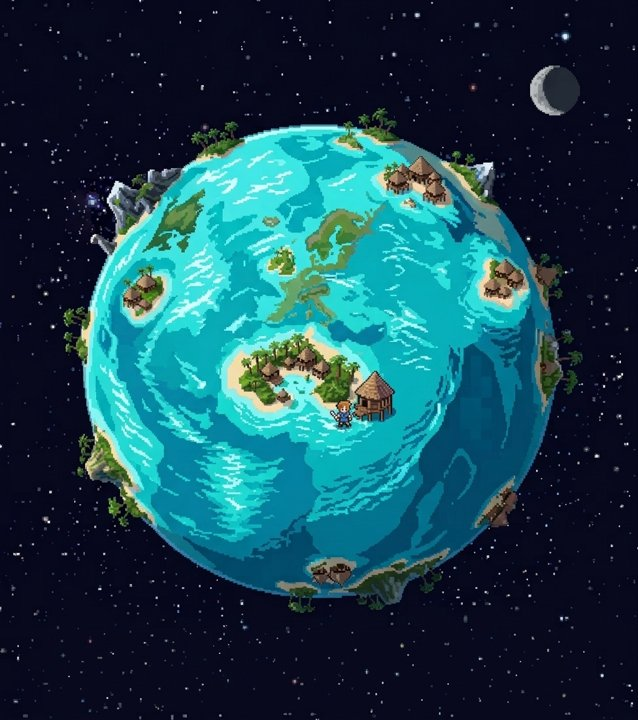
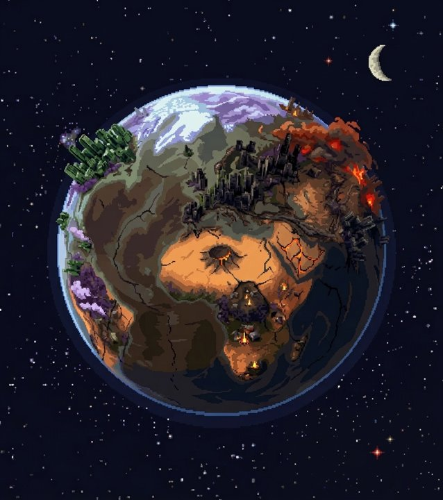

FrostGard é um mundo congelado em um inverno eterno, com temperaturas que chegam a -20 °C em algumas regiões ou durante tempestades de névoa árdua. Uma névoa glacial devora o horizonte e a temperatura cai drasticamente à medida que a noite se aproxima.
Apenas ruínas de pedra antiga, fortalezas abandonadas e cabanas de caçadores oferecem refúgio contra o frio letal.
Dica: procure refúgio e suprimentos em estruturas seguras e aquecidas antes do anoitecer.

Thalassia
Thalassia é um mundo predominantemente feito de águas cristalinas e algumas ilhas paradisíacas. Apenas 5% da superfície é composta por terra firme: milhares de ilhas espalhadas por um oceano vasto, vivo e transbordante de magia elemental.
Há registros de monstros marinhos na vastidão do oceano.
Dica: o jogador viaja entre as ilhas em busca de suprimentos. Os registros não aconselham passar a noite em alto-mar.

Terra Zero
A Terra parece um planeta pós-apocalíptico comum. Cidades em ruínas, veículos abandonados e vegetação mutante cobrem a superfície, após o que os poucos sobreviventes chamam de "A Guerra do Eclipsamento".
Acredita-se que a humanidade destruiu-se a si mesma em um conflito global por recursos. Por isso, a Terra se tornou um bioma de laboratório em escala planetária.
Uma civilização extraterrestre ultra-avançada, conhecida nas sombras como os Observadores, mantém o planeta instável e com constantes desastres naturais.
Dica: cidades fantasmas têm a maior chance de render recursos para sobrevivência. Cuidado com o que você vê: nem tudo é real.